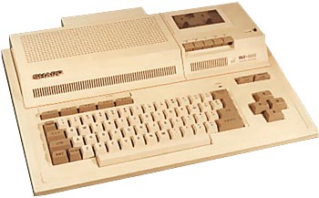
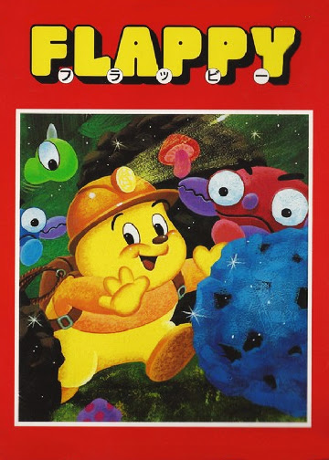
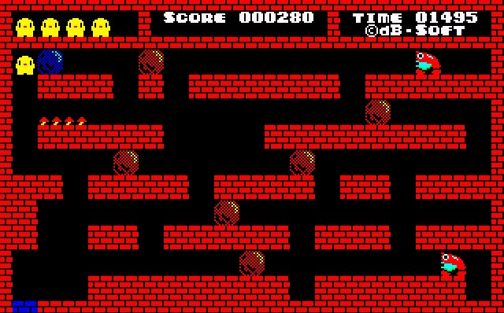

Sharp MZ-800

| Computer: | MZ-800 |
| Brand: | Sharp |
| CPU: | Z80A 3.56499 MHz |
| Memory: | 16Kb RAM, 16Kb ROM, 16Kb-32Kb video RAM |
| Production year: | 1984 |
Additional information:
- Resolution: 320 x 200 or 640 x 200 max. 16 colours with extra memory expansion, other wise only 4 colours out of 16.
- Comes standard with a cassette recorder but it could be taken out and replaced by a 2.8 inch quickdrive or a plotter.
- It could run a variety of high-level languages including BASIC, Pascal and FORTRAN, which had to be loaded into RAM before any programming could be undertaken. It could also be programmed directly in assembly code or machine code.
Flappy
Flappy was my first computer game on the Sharp MZ-800 and it is still today one of my favorite games :)

Flappy is a puzzle game by dB-Soft that features a somewhat mole-like character who must complete each level by pushing a blue stone from its starting place to the blue tile destination. Flappy first appeared on the Sharp X1 home computer in 1983 but was soon followed by conversions to a number of popular Japanese computers in the early 1980s, including the Sharp MZ-800.

A really good Java clone of the old 8bit Flappy game can be downloaded from sourceforge
And a complete playlist with gameplay of all 100 levels of Flappy on Sharp MZ-800 is played by Petr Diblík on YouTube. Unfortunatly there is no sound on the videos by Petr, but a level 1 gameplay with sound can be found played by Tompika74.